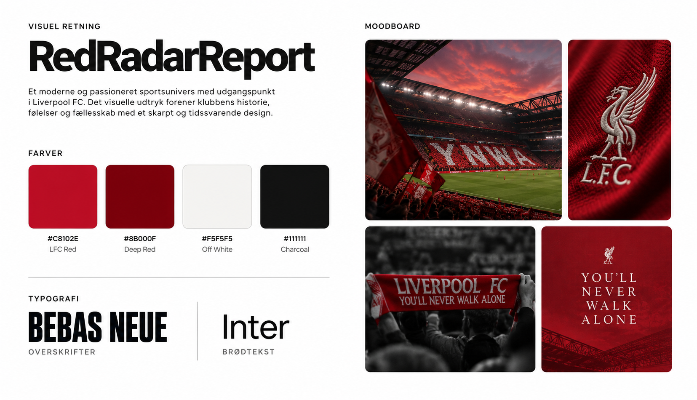
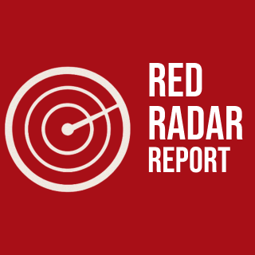
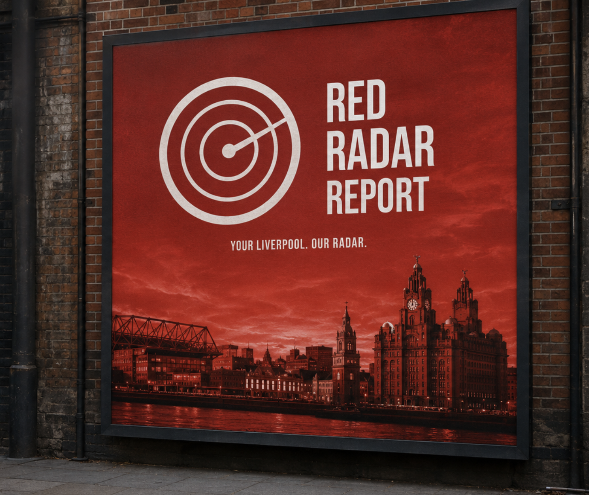
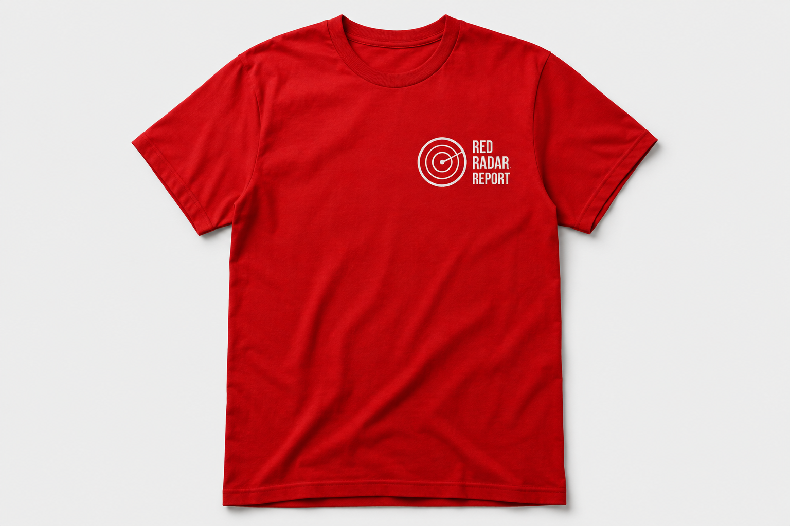
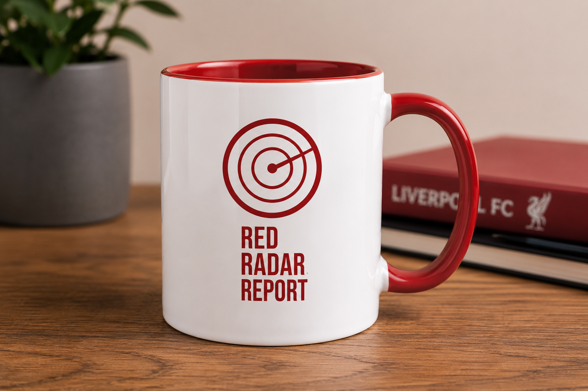
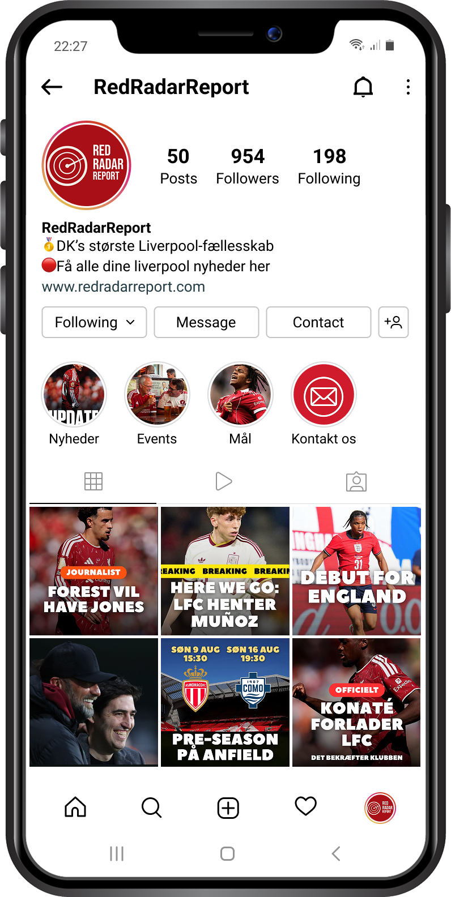
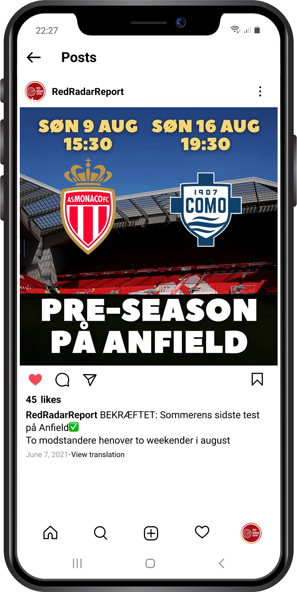
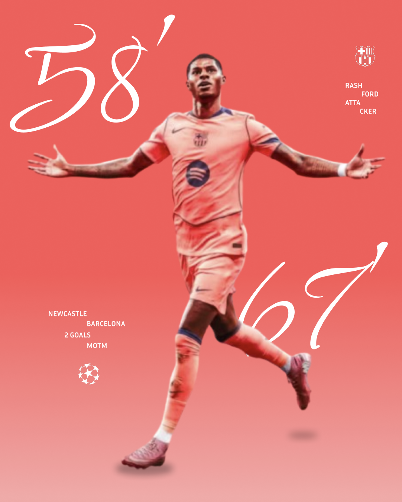
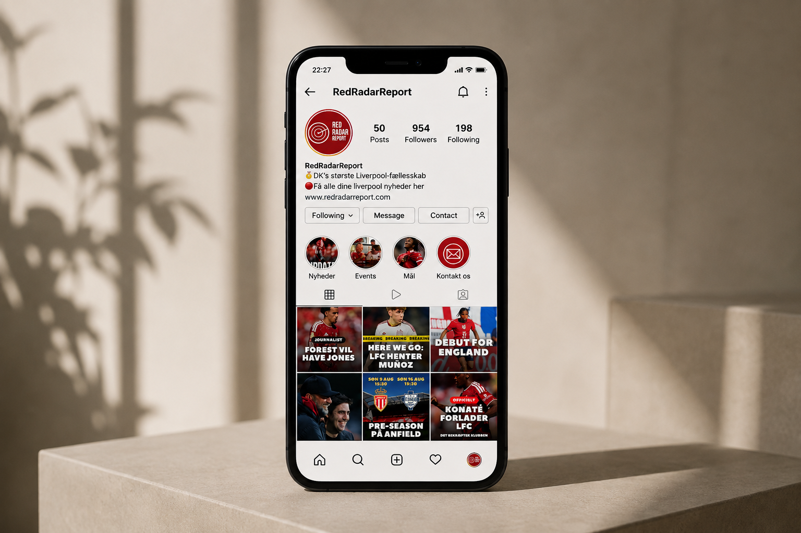

Den visuelle retning for RedRadarReport tager inspiration fra fodboldkultur, kampdage og den særlige stemning omkring Liverpool FC. Målet er at kombinere et råt og energisk sportsudtryk med et moderne digitalt design, der fungerer på tværs af SoMe, grafikker og fremtidige digitale platforme.
Logoet til RedRadarReport er udviklet med fokus på at skabe et enkelt og genkendeligt udtryk, der kan fungere på tværs af forskellige medier. Gennem mockups har jeg undersøgt, hvordan identiteten fungerer i praksis - fra digitale flader til merchandise som T-shirt, kaffekop og plakat. Målet har været at skabe en visuel identitet, der føles moderne og sportslig, men som samtidig kan stå stærkt alene uden direkte brug af Liverpool FC's eksisterende identitet.




Til RedRadarReport har jeg udviklet et SoMe-univers med fokus på at formidle Liverpool-nyheder og fodboldindhold på en hurtig og visuelt engagerende måde. Gennem forskellige opslag har jeg arbejdet med en genkendelig stil, hvor billeder, overskrifter og grafiske elementer skaber en tydelig rød tråd og gør indholdet let at afkode i et Instagram-feed.


Som en del af RedRadarReport arbejder jeg også med selvstændige fodbolddesigns, hvor jeg eksperimenterer med komposition, typografi, farver og billedbehandling. Designene giver mig mulighed for at afprøve forskellige visuelle stilarter og løbende udvikle mine kompetencer inden for grafisk design med udgangspunkt i min interesse for fodbold.


RedRadarReport er stadig et projekt i udvikling, og på sigt er ambitionen at bygge videre på universet og gøre konceptet mere levende. Det kunne blandt andet være gennem en aktiv SoMe-profil med nyheder, kampgrafikker og analyser samt udviklingen af en hjemmeside, hvor Liverpool-fans kan finde relevant indhold samlet ét sted. Projektet giver samtidig mulighed for løbende at eksperimentere med nye designs og udvikle mine kompetencer inden for grafisk design, branding og digitale medier.
